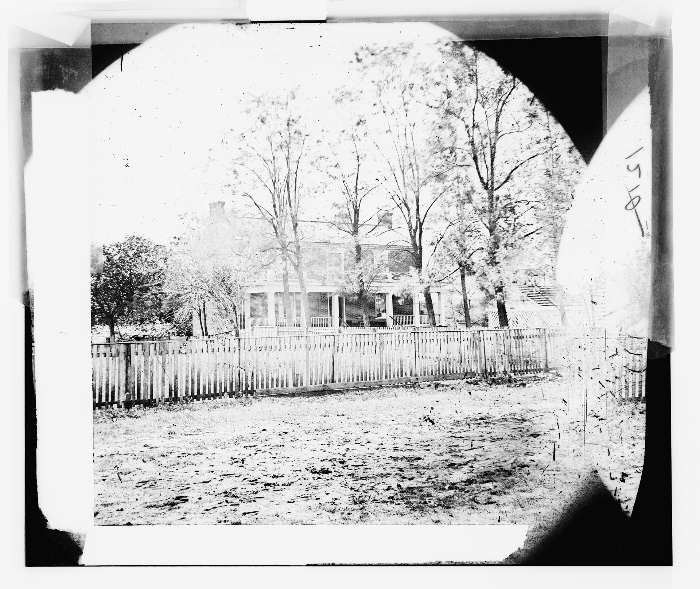

Directions: Read the full text, then answer the questions at the end.
In March 1864 Abraham Lincoln made Ulysses S. Grant general in chief of all Union armies. Grant's doctrine differed from earlier commanders. The Confederacy's armies, not its cities, were the objective, and every Union army would move at once, so the Confederacy could not shift men from a quiet front to a threatened one. Grant stayed in Virginia, and William Tecumseh Sherman took the western armies toward Atlanta.
From May 1864 Grant fought Robert E. Lee without pause. The Wilderness, Spotsylvania, and Cold Harbor cost casualties the country had never paid before, by the usual estimates some sixty five thousand Union men in six weeks. Grant did not turn back. He slid south after each battle and in June settled into the siege of Petersburg, where the armies stayed nine months.
In the west Sherman took Atlanta in September 1864. He ordered the city's civilians to leave, because Atlanta would become a military post, and answered Mayor James M. Calhoun's protest in a letter of September 12. War, Sherman wrote, is cruelty, and it cannot be refined. The letter stated the doctrine his army was about to carry across Georgia.
In November Sherman cut loose from his supplies and marched to the sea. Some sixty two thousand soldiers lived off the country and destroyed the railroads, mills, and stores in a corridor some sixty miles wide, so the society sustaining the armies felt the war in its households. Savannah fell in December, presented to Lincoln as a Christmas gift. In 1865 Sherman turned north, and Columbia burned. The destruction also fell on women, children, and freed people in the armies' path.
The war's politics came to a vote in 1864. The Democratic platform of 1864 declared the war a failure and demanded an armistice that would have left the Confederacy standing while terms were talked. The Democrats nominated George B. McClellan, the general Lincoln had removed. Through the summer Lincoln expected to lose.
Atlanta changed the arithmetic. Sherman's victory carried Lincoln to reelection in November with a clear majority of the popular vote and an overwhelming electoral margin. Union soldiers voted in the field, heavily for finishing the war. The result settled a question no battle could. The North had voted to continue the war to the Confederacy's end.
Congress did its own wartime work. With the seceded states' members gone, it had passed the Homestead Act and the Morrill Land-Grant Act in 1862, opening western land to settlers in 160 acre claims and granting land to fund state colleges, on land taken from Native nations.
Women who could neither vote nor fight built a second campaign. The Women's Loyal National League, founded by Elizabeth Cady Stanton and Susan B. Anthony, gathered petition signatures demanding an amendment abolishing slavery everywhere, some 400,000 names by the campaign's usual count. On January 31, 1865, the House passed the Thirteenth Amendment and sent it to the states. Its passage was a wartime event. The settlement it began belongs to the years after the war.
In the spring of 1865 the Petersburg lines finally broke. On April 2 Lee abandoned Petersburg and Richmond, and the Confederate capital, set afire in places by its own departing authorities, burned as Union troops entered on April 3. Lee marched west hoping for supplies, but Union cavalry cut across his retreat, and at Appomattox Court House his way ran out.
On April 9, 1865, in the parlor of Wilmer McLean's house, Lee surrendered the Army of Northern Virginia to Grant. The terms followed Lincoln's instruction to be generous. Soldiers were paroled home, not imprisoned. Officers kept their sidearms. Men who owned horses could take them home for the spring planting. Grant stopped his army's celebrating gun salutes. The enemy soldiers, he held, were fellow countrymen again.

Five weeks before the surrender, on March 4, 1865, Lincoln took the oath for a second term and delivered the address that read the war's meaning. One eighth of the whole population, he said, were colored slaves, and all knew this interest was somehow the cause of the war. Both sections read the same Bible, and the prayers of both could not be answered.
If American slavery was an offense that must needs come, Lincoln argued, the war was the woe due for it, given to North and South together, and it might justly continue until every drop of blood drawn with the lash was paid by another drawn with the sword. The address closed in obligation, with malice toward none and charity for all, and a call to bind up the nation's wounds.
On April 14, five days after Appomattox, John Wilkes Booth shot Lincoln at Ford's Theatre, and the president died the next morning, April 15. Other Confederate armies surrendered in the weeks that followed, and Jefferson Davis was captured in Georgia in May. The war had settled two questions beyond reopening. No state could leave the Union, and slavery as a legal system was destroyed.
At the settlement's edge stood people the measures had not reached. Annie Davis, an enslaved woman in Belair, Maryland, had written to Lincoln in August 1864 to ask whether she was free, because the Proclamation had not named her loyal state. Maryland freed her by its own new constitution that November. The freed people's claims to land, safety, and the vote stood in April 1865 exactly where the war had left them, unanswered.
1. State Grant's doctrine on taking command in March 1864. Name what he made the objective instead of cities, and state what every Union army was ordered to do at the same time.
2. State how Sherman defined his war in the letter of September 12, 1864, and state two things his army destroyed on the March to the Sea, naming the corridor's width.
3. State what the Democratic platform of 1864 demanded, and state what Atlanta's fall did to the election that November, including how Union soldiers voted.
4. State the two settlements the war had made by April 1865, and name the wartime event of January 31, 1865, that wrote one of them into the Constitution.
5. Answer in a short paragraph. The lesson question asks how the war ended, and what its ending settled. Give the strongest answer the reading supports, using the Appomattox terms and Annie Davis's letter as evidence for what was settled and what was not.
1. State Grant's doctrine. Grant made the Confederacy's armies, not its cities, the objective, and ordered every Union army to move at once, so the Confederacy could not shift men along its interior lines from a quiet front to a threatened one. He stayed in Virginia against Lee while Sherman took the western armies toward Atlanta.
2. State Sherman's definition, and the March's destruction. In his letter to Mayor Calhoun of September 12, 1864, Sherman wrote that war is cruelty and cannot be refined. On the March to the Sea his army destroyed the railroads, mills, and stores in a corridor some sixty miles wide (any two named), living off the country from Atlanta to Savannah.
3. State the Democratic demand, and Atlanta's effect. The Democratic platform of 1864 declared the war a failure and demanded an armistice, which would have left the Confederacy standing while terms were talked. Sherman's taking of Atlanta in September carried Lincoln to reelection in November with a clear popular majority and an overwhelming electoral margin. Union soldiers voted in the field and voted heavily for finishing the war.
4. State the two settlements, and the January event. The war settled that no state could leave the Union, and that slavery as a legal system was destroyed. On January 31, 1865, the House of Representatives passed the Thirteenth Amendment and sent it to the states, the wartime event that wrote slavery's end into the Constitution. Its later settlement belongs to the next unit and is not taught here.
5. How did the war end, and what did its ending settle? Full credit answers hold both halves. The war ended by coordinated pressure, Grant fixing Lee at Petersburg while Sherman destroyed the resources sustaining the Confederate armies, until Lee's retreat was cut at Appomattox Court House on April 9, 1865, where Grant paroled the soldiers home, left officers their sidearms, and let men take horses for the spring planting. The ending settled the Union's indivisibility and slavery's destruction. Annie Davis's letter measures the limit: an enslaved woman in loyal Maryland, a state the Emancipation Proclamation had not named, had to ask the president in August 1864 whether she was free, and the freed people's land, safety, and vote stood unanswered in April 1865. A paragraph naming only the surrender, or only emancipation, earns partial credit.